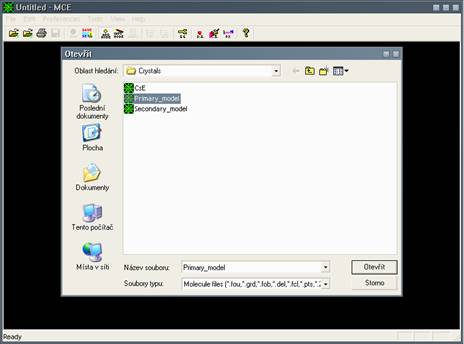

1. Introduction
Program MCE is destined for voxel map, atom, molecule or crystallographic data visualization. MCE supports placing atoms into the voxel map. Placed atoms can be exported as asci file with atoms coordinates.
The code is written in Microsoft Visual C++. MFC library and OpenGL library was used. MCE works on any WIN32 based OS.
MCE runs on PC with at least a Pentium-class or equivalent processor. This code does not need special device or special PC configuration. For most of the work suffice CPU on 1000MHz, 256MB RAM and 3D graphic card with OpenGL HW accelerator.
For more details see references in Menu->Help->”About MCE”
2. File format support
2.1. Input file formats
MCE can read files from different crystallographic or other software:
- Oxford CRYSTALS
- SHELX/WinGX
- GSAS
- XD
- JANA2006.
2.2. output file formats
- pov-ray: *.pov
- bitmap: *.bmp
- VRML: *.wrl
- Peak list: asci file with atoms coords
3. Menu
3.1. File
- Open Primary Model: See 2.1 for supported file formats.
- Open Secondary Model: MCE can read second map. The second map must meet some requirements: First and second map must have the same number of lines, columns and sections! Note: if you load first and second map, atoms from first map are used. You can load for example difference map with void map, etc.
- Save BMP: It is possible to save screen as bitmap picture.
- Save POV-ray input: Pov-ray is a special file format, which enables scene rendering. For more details visit http://www.povray.org/
- Save VRML input: VRML is file format, which enables to visualize scene in other programs.
- Save Peaks: It saves placed (gold) atoms coordinates into the asci file.
3.2. Edit
- Add new peak: If MCE is in “add-atom mode” you can place a gold atom by clicking right-mouse button. It is possible to change its position, use right-mouse button again. If you place it to the correct position, you can add this atom using this (“Add new peak”) menu item. After this you can place another atom.
- Clear peak list: It deletes all added gold atoms.
- Save map settings: This item saves map iso-levels. If you load another map, it will start this map with saved iso-levels. (See 3.3 “Display style” how to enable this functionality).
3.3. Preference
- Amination: Drag and move - scene will then rotate
- General setup: It changes projection mode (perspective or orthographic) and picking mode (2D or 3D). Note: If you draw 2D map (how to draw 2D map see 3.5) and if you want to place the gold atom, you should change picking mode to 2D!
- Display style: In this window it is possible to change how to show atoms, bonds, maps, unit cell, etc. Be careful if you want to change ball or cylindre size or resolution.
- In ELD map display style it is possible to check “use previous map settings”. If you want to load several similar maps one after another, you can check this setting. It means that if you load some map and you press “Save map settings”, it saves maps iso-levels. After this, if you load another map, it starts this map with saved iso-levels.
- Data type: If you check organic it will not calculate inter molecules bonds.
- Color settings: In this window it is possible to change background color and primary and secondary map color.
- Periodic table: It shows periodic table.
- Left mouse click: change color
- Right mouse click: change atoms properties
- Add-atom mode: In this mode it is possible to use right mouse click for placing an atom to the map
- Info mode: In this mode it is possible to use right click to select some molecule. Note: if you select some molecule, you can delete it. Press “d” for deleting.
3.4. Tools
- SG setup: If you load file with crystallographic information, you can select the correct space group. It is possible to draw several unit cells together - use “from” and “to” edit boxes.
3.5. View
- Level control primary map: If you load some map, you can change its properties and isolevel in this window. It is possible to visualize map as contour lines, surface or its combination. Use scroll bars to set the isolevel which you want to display or set the correct number to the “layer value” edit box (mostly faster). If you want to show 2D map, tick the 2D map check box and select “height”. If you want to place atom to the 2D map see 3.3 “General Setup” and 3.2 how to do it. Note: You can place atom to the red map only! If you want to change maps colors see 3.3 “Color Settings”.
- Level control secondary map: If you load secondary map, you can change map properties see “level control primary map”.
4. Examples
4.1. Loading primary map and map setting – CsE
(Default in “Program files\ICT\MCE\Examples\Crystals\CsE.fou”)
1. Load CsE.fou file
2.
3. MCE shows CsE file.
4. If you want to change map settings use menu->View->”Level control primary map”
or use icon on toolbar

5. Change map isolevel.
4.2. Loading Primary and secondary map, change map properties and color settings
(Default in “Program files\ICT\MCE\Examples\Crystals\Primary_model.fou”)
1. Load Primary model:
2.

3. Primary map loaded
4. Load Secondary map
5.
6. Primary and secondary maps loaded
Primary map is electron density and secondary map is void map
7. Use menu->View->”Level control primary map” or use icon on toolbar and menu->View->”Level control secondary map” or use icon on toolbar.
Uncheck Layer1 in primary map – green map is dumb…
Check Contour&Surface in Secondary map – it shows the first layer (Layer 1) as surface and Layer1, Layer2 and Layer3 as contour maps.
Check Reverse normals – it paints surface inside.
UnCheck Layer2 and Layer3 – it is now more synoptical.
This picture now shows solvent butan-2-ol in void space in the crystal structure of CsE.
4.3. Placing atoms into the map
- load primary and secondary map (use prim_4_3.fou-primary and sec_4_3.fou-secondary files)
red, green, blue – eld map
yellow, cyan and violet – void map
- Open primary map control and set properties
- Open secondary map control and set properties
- Find green peaks in the void space as show the picture
- Set the red map (primary map, Layer3).
If you want to place atoms to the map, primary-Layer3 must be present!
- Click on some peak in the map (use right mouse button) and place gold atom. Repeat right click until the gold atom is in the correct position.
Right click places atoms to the maximum!!! Not to the minimum… For placing atoms to the other places use 2D map picking.
- If you find the position correct select menu->Edit->”Add new peak”
- Repeat step 6. and 7. to place all gold atoms to the map
- If you think that these positions are incorrect, select menu->Edit->”Clear peak list”. It erases all gold atoms.
- If you have problem with placing atoms to the map, you can use 2D picking. Set in menu->preferences->”General setup” 2D picking
11. Open “Level control primary map”. Set 2D map and set the correct height of 2D map.
13. Now, you can place atoms to the 2D map. This setting allows you to place atoms anywhere in the 2D map.
14. If you think, you placed atoms correctly, you can export theirs coordinates. File->”Save peak list”
15. file output:
#EDIT
ATOM Q 1 X= 0.921841 Y= 0.254516 Z= 0.873093
ATOM Q 1 X= 0.941712 Y= 0.185850 Z= 0.830249
ATOM Q 1 X= 1.044382 Y= 0.186113 Z= 0.790634
END
4.4 Use previous maps iso-levels and maps settings
1. Use example 4.2 to set maps iso-levels and settings as shows the picture:
2. Menu->Preferences->Display style. Check “Use previous map settings”
- Menu->Edit->Save map settings
- Load another map or close MCE and load another map. Map(s) will be loaded with saved settings.